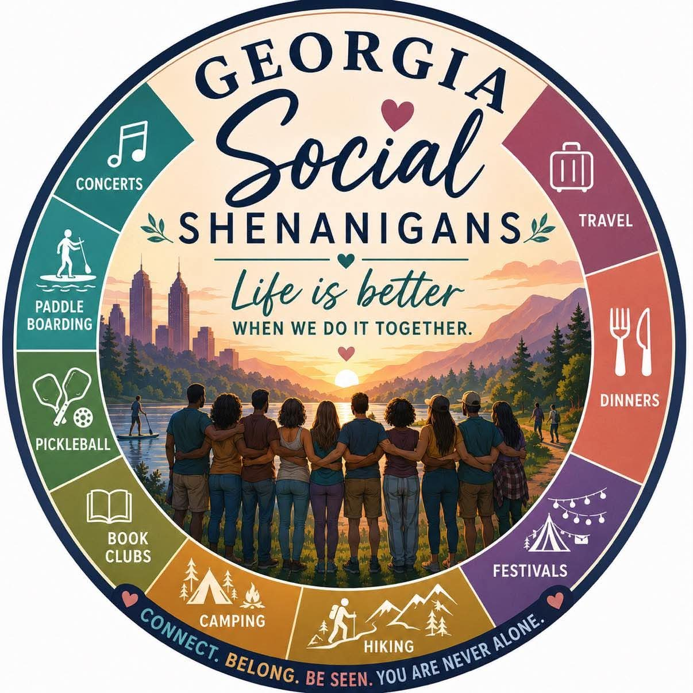

Name
Admin
Bio goes here — add a few sentences about how they joined, what they love about the group, and a fun fact.

A welcoming, judgment-free community for real people navigating real life — new faces, new friendships, new shenanigans.
Life has a funny way of reshuffling the deck. We get married. We have babies. We go through divorces. We lose the ones we love. We move to new cities, change jobs, become empty nesters, or simply wake up one day with brand new interests and wonder — where do I even belong now?
The tribes and groups we once naturally fell into? Sometimes they just... fade. And depending on where we are in life, making new friends can feel harder than it ever should.
But here's the truth — we have ALL been there. At least once. Maybe more than once. No matter your age, your background, your beliefs, or who you love. That feeling of wanting to belong somewhere? It's one of the most human things there is.
That's exactly why Georgia Social Shenanigans exists.
We are a welcoming, judgment-free community built for real people navigating real life — and we would love to have you.
Request access to the private group, or say hi on our public page first.
Tap a photo to learn more about who's behind the shenanigans.
The friendly faces keeping the shenanigans running smoothly.
Bio goes here — add a few sentences about how they joined, what they love about the group, and a fun fact.
Rep the group with a tee, hoodie, or sticker from our shop.
🛍️ Shop the Store (add Shopify link)The latest happenings from the group — swap these placeholders for real posts and event recaps.
Short recap of a recent meetup or a welcome note for new members goes here.
Details on the next meetup — date, time, location, and what to bring.
Meet Carol! A curious, adventurous hiker who loves photography, the outdoors, and hosting hikes for the group. Her motto: say "yes" to fun stuff that comes your way. Read her full story →